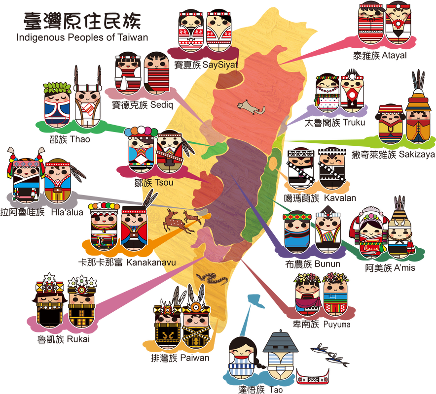
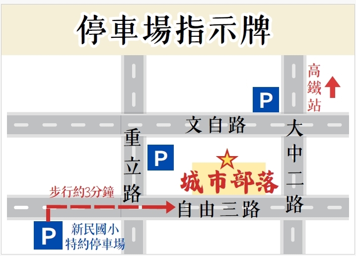

Our Story
2009年莫拉克颱風重創台灣，我們的團隊收購大量的漂流木，結合原住民工藝師，在鋼筋水泥大樓中營造出部落的氛圍，城市部落由此而生。
城市部落的料理學習原住民族對山林食材的智慧，參酌原住民族的料理並融入創意，結合台灣各地農、漁民的在地食材，物產豐富請與我們一起為在地食材加油。
我們一直期許呈現原住民文化與美食的餐飲市場區隔，並結合原住民舞團及歌手展演相輔相成。我們知事恆有不足而尚待努力，謹期盼您的支持與鼓勵，我們本諾初衷，向前邁進。
高雄市左營區自由三路 551-1 號
